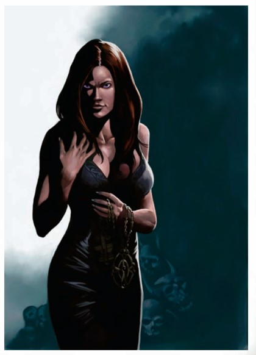

这女性外表的生物有著琥珀般的长��与池水似的紫眸。她的穿著露出了胸与背,而笑容正在她的唇间浮现。正当她醉人的双眸应允了那无尽的欢娱,她的丰唇轻撅等待亲吻时,某种邪恶却似乎正潜伏在她看似无暇的表面之下。
中型异界生物(巴特兹,邪恶,跨位面,守序)

| 生命骰： | 12d8+48(102hp) |
| 先攻： | +8 |
| 速度： | 30英尺(6格);飞行60英尺(良好) |
| 防御等级： | 28(+8敏捷,+3护甲,+7天生),接触18,措手不及20 |
| 基本攻击/擒抱： | +12/+16 |
| 攻击： | 近战 +1寒铁短剑+21(1d6+5/19-20)或触碰+20(毒素) |
| 全力攻击： | 近战 +1寒铁短剑+21/+16/+11(1d6+5/19-20)或触碰+20/+15/+10(毒素) |
| 面宽/触及： | 5尺/5尺 |
| 特殊攻击： | 欺瞒;毒素;召唤巴特兹;类法术能力 |
| 特殊能力： | 黑暗视觉;心灵感应100尺;巧言;再生5;伤害减免5/银与善良 |
| 豁免： | 强韧+12,反射+16,意志+17 |
| 属性： | 力量18,敏捷27,体质18,智力23,感知24,魅力 29 |
| 技能： | 唬骗+24,专注+19,交涉+28,易容+24(+26在装腔作势时),躲藏+23,威吓+26,知识(神秘)+11,知识(宗教)+21,知识(位面)+16,聆听+22,辨识法术+23,侦查+22,生存+7(+9在其他位面或追迹时) |
| 专长： | 寓守于攻,闪避(B),钢铁意志,灵活(B),跳跃攻击,瞬发类法术能力(魅惑怪物),武器娴熟 |
| 地域： | 见下文 |
| 组织： | 见下文 |
| 挑战等级： | 11 |
| 宝物： | 隐形术药水,误导药水,��避侦测药水,+1寒铁短剑,防护护腕+3;双倍 |
| 阵营： | 总是守序邪恶 |
| 进化： | 13-24HD(中型) |
| 等级调整： | - |
愉悦魔是狡诈的恶魔,她们精于使诸神的�W从们堕落。愉悦魔说天界语,通用语,龙语和炼狱语。
愉悦魔是化敌为友的专家。在战斗时,她们会飞在空中,并保持够近的距离以施展道德沦丧与瞬发的魅惑怪物。假定她的敌人在两次豁免中都失败了,她会命对方转身面对从前的同伴。她会持续这个战术直到友方多于敌方。那时,她会施展燃火术,并将小火球抛向剩余的抵抗者们来支持她的盟友。
巧言(Tongues)(Su)：如同巧言法术;永久起效;施法者等级19。
再生(Ex)：善良阵营的武器与拥有善良关键字的法术或效果可对愉悦魔造成正常伤害。
欺瞒(Beguile)(Su)：愉悦魔可以暂时得到一名活物的操控权。当愉悦魔使用此能力时,她立即获得该生物的控制权,受愉悦魔控制的生物将会即刻得到一整轮的行动。愉悦魔一天可使用此能力两次,目标是30尺内任何在意志检定(DC25)中失败的活物。这是个影响心灵的惑控效果。
毒素(Ex)：接触,强韧DC22,1d6感知/1d6感知。豁免DC基于体质,并包括了+2种族加值。
召唤巴特祖(Sp)：80%机率召来一个收割魔(Harvester Devil),两个链魔,或是六个劣魔;1次/天;施法者等级19。此能力等价于六级法术。
类法术能力(施法者等级17)：
随意-魅惑怪物(DC23),锐耳术/鹰眼术,注目术(DC21),高等传送术(自身加上至多50磅重的物品),道德沦丧(DC24)*,变形术,燃火术(+16近战触碰或+20远程触碰),暗示(DC22),吸血鬼之触(+16近战触碰)
1次/天-异界传送(仅自身),锢魂术
*此法术出现在魔族法典Ⅰ中。如果你没有这本书,替换为高等命令术。
一名愉悦魔起初猎捕牧师与圣武士。她利用异界传送进入了主物质位面后,接著开始摧毁受害者的坚贞与奉献,将对方的心灵扭曲至她与她的主人所意欲的样貌。
愉悦魔是那些因身分和与生俱来的美貌与力量而被特别选中的欲魔。承担著污染良善贞洁的责任,她们旅行至主物质位面,为了她们侍奉的邪恶而致力,只有在她们完成任务时才会回到九狱。那些等著失败者的惩罚是严厉的;因此,所有愉悦魔都加倍努力地腐化她们的受害者。
环境：愉悦魔是巴托九层地狱的原住民,纵使她们大多数将时间花在主物质位面。
典型身体特征：即使是处于原本型态下,愉悦魔也是美的象徵,大概近似于堕落天使。她比5尺稍微高一些,重120磅。她有著苍白的皮肤,红��与黑眼。从她的背部伸展而出的是一对有著羽翼的黑翅。愉悦魔利用变形术来隐藏自己的恶魔本质,化身成任何能够吸引她们目标的模样。
愉悦魔享受她们崇高的身分,享受著能够离开这丑陋地狱的机会。对她们而言,物质位面已经是时候�裾�了。凡人是意志薄弱的存在,只因肉体的喜悦就接受邪恶的驱使。愉悦魔对于引诱任何种族的男性(或女性)都不会有丝毫的愧疚。�窦�新鲜的灵魂就是她们的义务,若能使正直的伟人堕落,她们会更加欣喜。
当身处九狱时,愉悦魔一如其馀所有的同类般计画与共谋著,紧抓住每一个向上攀升的机会,为了有一天能够挤身深狱炼魔的行列之中。她们会迅速地背叛同胞,如果这意味著她们能抢得先机的话。深狱炼魔与其他大魔鬼视愉悦魔为玩物,抛弃她们与选上她们的速度一样快。因此,这些诱惑者们会迅速地担起任何能避开主人无情待遇的任务。
愉悦魔拥有该CR的双倍标准的财宝,这大约是15,000gp。她们的自保意识驱使她们将财富投资在保护性的物品与武器上。尽可能地留下少数金币(10d10gp)与几枚便宜的珠宝(价值不会高于250gp)。当愉悦魔正进行任务时,她会携带相应价值的宝石以便对受害者施展锢魂术。
在知识(位面)上拥有级数的人物能够更加了解愉悦魔。当人物进行一次成功的技能检定后,将揭示出下列知识,包含更低DC得出的信息。
| DC | 结果 |
|---|---|
| 21 | 这个生物是愉悦魔,也以巴瑞绮娜--巴特兹中的诱惑者而闻名。 |
| 26 | 愉悦魔致力于毁灭神的�W从。她们拥有许多种类法术能力,能够协助她们完成这个目的。 |
| 31 | 避开巴瑞绮娜的碰触。它能摧毁意志并引人疯狂。 |